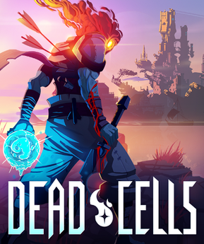
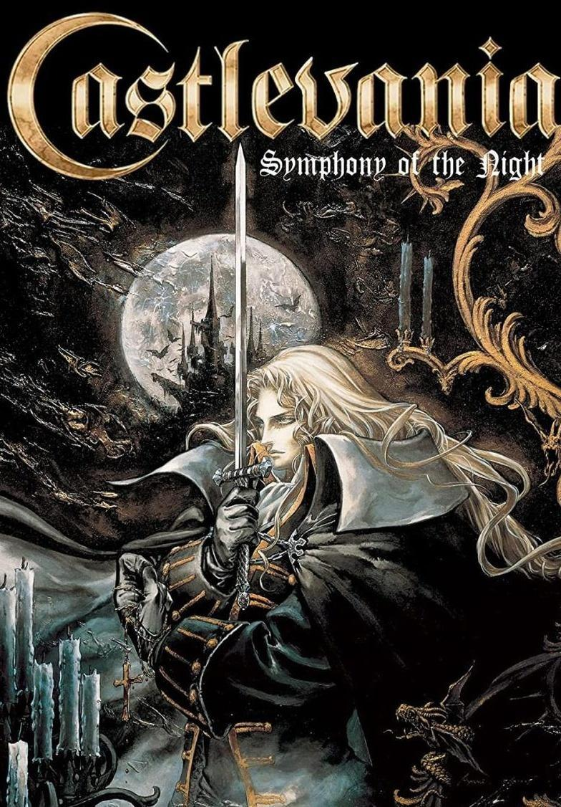
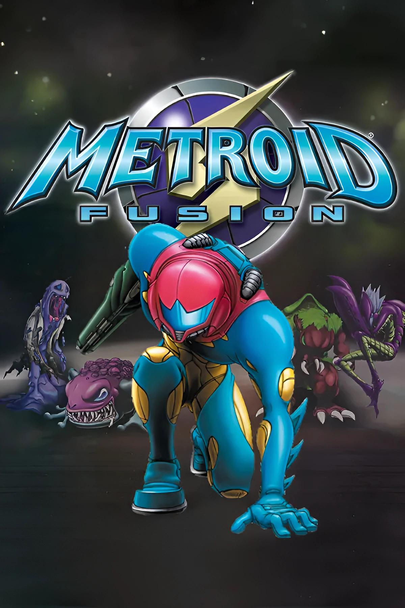
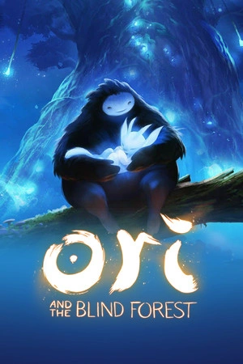

Juegos Metroidvania

Hollow Knight es un videojuego perteneciente al género metroidvania desarrollado y publicado por Team Cherry. El videojuego fue inicialmente lanzado para Microsoft Windows en febrero de 2017, y más tarde para macOS y Linux en abril de 2017. La adaptación para Nintendo Switch fue lanzada el 12 de junio de 2018.

Dead Cells es un videojuego de acción y plataformas tipo roguelike y metroidvania desarrollado por Motion Twin. Fue lanzado en 2018 para varias plataformas, destacando por su jugabilidad desafiante, exploración no lineal y combates fluidos.

Castlevania: Symphony of the Night, conocido en Japón como Akumajō Dracula X: Gekka no Yasōkyoku, es un videojuego de acción-aventura de gráficos 2D desarrollado y publicado por Konami en el año 1997.

Metroid Fusion es el cuarto videojuego de la saga Metroid, el primero en haber salido para Game Boy Advance. Fue desarrollado por Nintendo Research & Development 1 y publicado por Nintendo en 2002. Es la secuela directa de Metroid: Other M de Wii y la precuela de Metroid Dread de Nintendo Switch.

Ori and the Blind Forest es un videojuego de plataforma aventura de un jugador con el estilo de Metroidvania diseñado por Moon Studios, un desarrollador independiente, y publicado por Microsoft Studios.